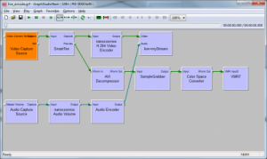

nanostream/windows/windows_developer_manual
Windows nanoStream SDK components
Note: Not all modules are contained in all configurations. Please ask for availability and prices.
Live Video Capture Active-X Control (npvidcap.ax)
Active-X-Control compatible with Internet Explorer and other ActiveX technologies API compatible to Javascript, C/C++, NET/C#, VisualBasic, Delphi, and others
Live Video Capture NP Plugin (np_vidcap.dll)
Plugin for Mozilla/Netscape based browsers, Javascript interface (Firefox, Safari)
nanocosmos H.264 video encoder (Filename: nh264enc.ax)
DirectShow video encoder filter for encoding live video to H.264
nanocosmos AAC audio encoder (Filename: naacenc.ax)
DirectShow audio encoder filter for encoding live audio to AAC
nanocosmos MP4 File Writer
DirectShow filter for creating MP4 files with H.264 support
nanocosmos RTMP Network Writer (Filename: nRtmpRenderer.ax)
DirectShow filter for streaming to Wowza and Flash Media Servers Example URL: rtmp://localhost/live+myStream
HD / UDP Streaming Filters
DirectShow Streaming components for HD video streaming in Local Area Networks: Point-to-Point, Broadcast, Multicast support Example URL: udp://localhost:1234
WindowsMedia Encoding and Streaming
Streaming component compatible to Microsoft WindowsMedia Video Formats:
Additional Extensions:
- nanocosmos Stereoscopic 3D-Video Mixer supporting Side-by-side/Interlaced/Color Anaglyph modes
- Video Resizer for resizing and deinterlacing video
- Overlay Filter for blending of, Texts, Bitmaps, Tickers, etc.
- Desktop Capture / Screen Grabber Filter for Application Streaming e.g. Games (upon request)
- Remote Control Function for Keyboard Feedback
- Player/Clients for DirectShow/Applications or Browser-Plugin or Flash based
- Live Video Encoder Application Reference Application to show functionality in a simple end user program
DirectShow Filter usage with GraphEdit / GraphStudioNext
All Live Video Encoder components are available as DirectShow filters and may be used within DirectShow applications.
We recommend using GraphStudio as a replacement for GraphEdit, as RTMP URLs may be set easily with this software.

Setting DirectShow properties from C++
The H.264 parameters may be set by calling the InanoCodecOpts interface. The RTMP output path may be set by calling the SetFileName() method of the default DirectShow FileSinkFilter interface.